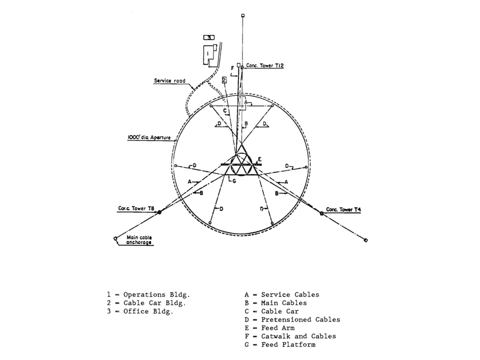
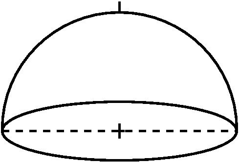

1. Some questions are labeled (F: first timer) and (R: returnee). First time attendees should focus on the "F" questions; returnees on the "R" ones. Everyone should answer the questions without designations. In all cases, return attendees shall not reveal the answers to first timers until sufficient effort is expended. (And, any bribes must be shared 50:50 will the Scavenger Hunt creators.)
2. You may consult any source anywhere but please be sure to indicate where you got your information. And watch out for bad websites! Actually, if you find any mis-information, make a note of it for the blog.
UAT10.01 Scavenger Hunt #0: The Arecibo Telescope
This scavenger hunt will explore some details of the Arecibo telescope and the Arecibo Observatory. 0.0 (F) Why do ALFALFA team folks always start enumerated lists with "0", not "1"? 0.1 (F) Below is a schematic diagram of the AO telescope as viewed from above. The 900 ton platform hangs in midair on eighteen cables, which are strung from three reinforced concrete towers. One is 365 feet high, and the other two are 265 feet high. The towers are named as if they were on the face of a clock oriented with "12" to the north: T4, T8 and T12. Which tower is the tallest of the 3?
Note: this map predates the ground screen/upgrade.
0.2 Where on the site can you find a framed photograph of what is referred to as "Saint Riccardo" (complete with halo).
0.3 When did the formal opening ceremony of the Arecibo Ionospheric Observatory take place?
| 0.4 (R) Let us suppose that there are some extraterrestrial beings in the vicinity of the Solar System whose lifeform resembles that of a many pointed star and that they intercept a junk U.S. spacecraft containing a partly degraded plaque showing the illustration to the right. Where does this illustration come from and what is its intended meaning? |
 Click here for larger view. |
0.5 (F) In the movie "Contact", Jodie Foster and Matthew McConoughy have hanky panky in what building on the site?
0.6 (F) Below is a schematic diagram of the local sky as observed from Arecibo.
Imaging that you are standing at the
center looking up. Label on this diagram the following:
|  |
0.7 On Monday afternoon, we have been allocated an hour of telescope time (from 4 to 5 pm AST) to demonstrate the ALFALFA observing setup. We will practice with the setup we'll use later that night (around 2 am Tuesday) when we will observe ALFALFA spring drift 82p1 at a Declination of +19o49'54". What will be the zenith angle of the drift?
0.8 (R) What is the minimum zenith angle at which ALFA can be positioned?
0.9 Why can't we observe a source directly overhead?
0.10 Below is a schematic diagram of the AO platform as viewed from the side.

- At what azimuth will we orient the Gregorian so that we can observe the drift 82p1 Monday night/Tuesday morning?
- What do we mean by an "uphill feed"?
- What are the advantages of Gregorian optics over line feeds?
- At what frequency does the very long line feed work?
- What popular movie features a fight between the hero and the bad guy on the long line feed?
0.11
Here is a schematic diagram of the
hour angle - declination plane as observed from Arecibo. Familiarize yourself
with this diagram and how to use it.
(Note that this one
comes from the good old days, so the limit designations don't include
the Gregorian or ALFA.)
|
 |
This page created by and for the members of the ALFALFA Survey Undergraduate team Last modified: Sat Jan 3 12:34:38 EST 2009 by Martha